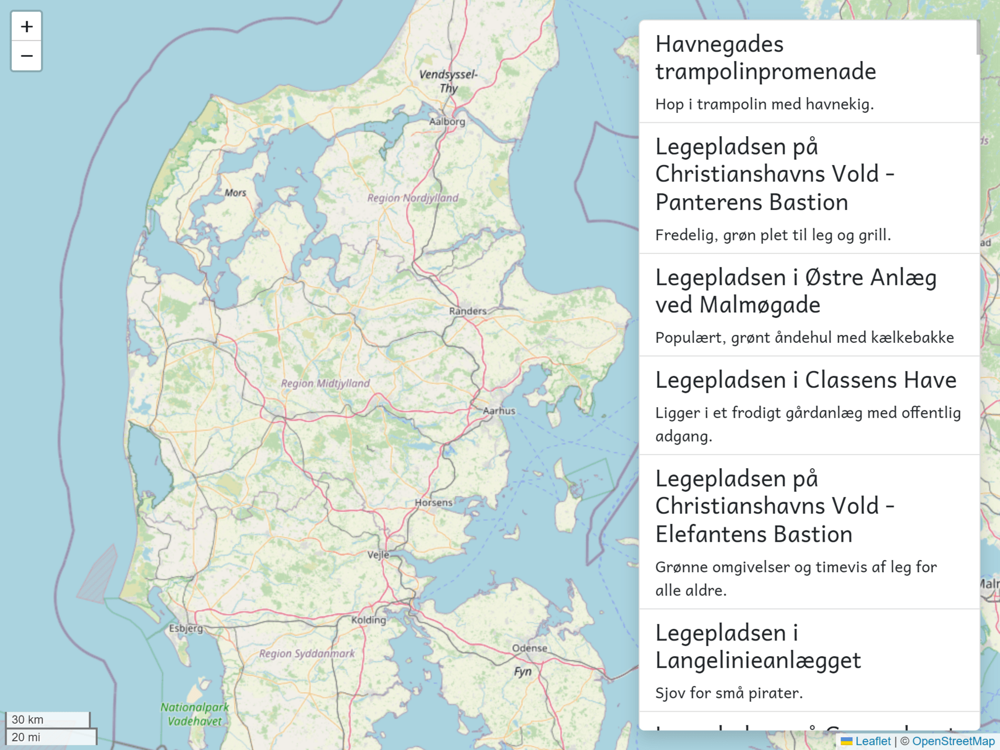

The app component is still using the old version of the service that returned an array directly.
That is the reason you are having compile errors in the CLI output.
Let’s update the app component to use the observable. Remember toSignal?
Save all files and check that you now have more than the 4 mock playgrounds.
